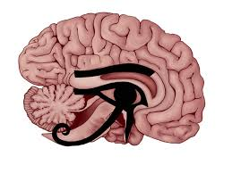

Brain Teasing Eye Questions
- How to decide Right or Left side on Enucleated Eye?
- Why is Cornea Transparent?
- Who invented the drug XALATAN?
- What refraction does the cornea acquire after the introduction of air into the anterior chamber?
- Where first mention of MYOPIA is found in history?
- Which medical term means "blindness to one's own blindness"?
- Which was the first published journal in Ophthalmology?
How to decide Right or Left side on Enucleated Eye?
The recognition of key anatomical landmarks is used to confirm a left or right globe.
- When viewing the posterior aspect of the globe with the long ciliary arteries in the horizontal plane and the superior oblique uppermost, the inferior oblique will insert to the left of the optic nerve in a left eye and to the right in a right eye
- Long ciliary arteries—this posterior blue line indicates the horizontal plane.
- The superior oblique muscle has a fine tendonous insertion into the superotemporal pole of the globe.
- The inferior oblique muscle has a thick muscular insertion into the posterotemporal side, just below the horizontal plane and below the temporal long ciliary artery.
- Cornea—this is longer horizontally than vertically.
- Optic nerve—lies closer to the nasal than the temporal limbus.
Who invented the drug XALATAN?
On the one hand, the question is very simple, and on the other, it is extremely complex. Like any scientific discovery (and the creation of a new class of drugs, the discovery of new properties of prostanoids - the ability to influence ophthalmotonus, is equated to discoveries, which is confirmed by the receipt of patents by the authors), XALATAN is a collective work of several generations of researchers.
The first reports on the effect of prostanoids on ophthalmotonus in rabbits belong to Beitch, et al. (1969), then MS Starr. (1971), Kass, MA, Posos, SM, Moses. RA, and Becker B. (1972), Camras, et al., (1977), Camras CB, Bito LZ (1981). In the first works, the researchers first discovered the hypertensive effect of prostaglandins on the eye, and only after numerous experiments with purified fractions of prostanoids, with various methods of application of drugs (injections, instillations, introduction into the cannulated eye), the ophthalmic-hypotensive effect of prostaglandins of the F 2 alpha subclass was established. The existence of the uveoscleral outflow tract was first discovered by Bill A. in 1975, without regard to prostaglandins and their effect on ophthalmotonus. C5 alkyl-substituted lipid-soluble methyl, ethyl, isopropyl or isobutyl (C1, C5-substituted) esters of prostaglandin F2 alpha in the form of soluble tromethamine salts in sterile anhydrous solution of peanut oil, in a form convenient for use in ophthalmology. The prostaglandin content in the proposed eye drops ranged from 0.01% to 1% prostaglandin. (C1, C5 are the numbers of carbon atoms substituted by alkyl groups in the prostaglandin molecule). According to the chemical formula latanoprost - (+) - isopropyl-Z-7 - {(1R, 2R, 3R, 5S) -3, 5-dihydroxy-2 - [(3R) -3-hydroxy-5-phenylpentyl] cyclopentyl} - 5-heptenoate. After that, a number of publications devoted to the study of the problem appeared, in particular, many works by Hedman K, Alm A., Linden C, Widengard I, Camras CB, Watson PG, Stjernschantz J., B. Resul and other researchers. Moreover, until the mid-nineties (more precisely, until 1994) latanoprost figured under the "name" of the substance PhXA41. For the first time to release a commercial preparation of latanoprost under the name "Xalatan" was proposed in January 1996 by Karl Brown - Sales Director of Pharmacia & Upjohn, USA. (Pharmacia & Upjohn was formed in November 1995 through the merger of Pharmacia Aktiebolag and The Upjohn Company. On April 3, 2000, through the merger of Pharmacia & Upjohn and Monsanto / Searl, the new Pharmacia Corporation was formed. which currently makes the commercial drug Xalatan). And since December 1995, the Federal Drug Administration of the United States of America has approved long-term trials of a commercial drug latanoprost with the market name Xalatan. After six months of large-scale trials of Xalatan, the FDA has authorized Pharmacy and Upjohn to sell the commercial drug Xalatan. Therefore, the inventor of latanoprost, the active principle of the drug XALATAN (phenyl substituted analogue of PGF2a), is Laszlo Z. Bito, and the author of the commercial drug (or rather the project) XALATAN (trademark of latanoprost from Pharmacia Corporation) is Karl Braun (from Pharmacia Corporation).
What refraction does the cornea acquire after the introduction of air into the anterior chamber?
Refraction of the cornea (refraction) when the anterior chamber is completely filled with air will be equal to "-4.9 Diopters", while normally it is about +43 Diopters.
Solution: The cornea is essentially a lens with two refractive surfaces - anterior and posterior. Remembering the school physics course, you can calculate the refraction (refractive power) of any lens by the formula:
D = D1 + D2 - SxD1xD2
where D is the refractive power of the lens (refraction)
D1 is the refraction of the front refractive surface of the lens, calculated by the formula: n2-n1 / r, where: n2 is the refractive index of the second medium, n1 is the refractive index of the first medium , and r is the radius of the front curvature in meters
D2 is the refraction of the rear refractive surface of the lens, calculated by the formula: n2-n1 / r, where: n2 is the refractive index of the second medium, n1 is the refractive index of the first medium, and r is the radius of the rear curvature in meters.
S is the coefficient calculated by the formula d / n, where: d is the thickness of the lens in meters, n is the refractive index of the lens.
For the human cornea, the above values are:
- corneal refractive index - 1.376
- air refractive index - 1.0
- the refractive index of aqueous humor - 1.336 (we do not need)
- radius of the anterior curvature of the cornea - 0.0077 meters (7.7 mm)
- radius of the posterior curvature of the cornea - 0.0068 meters (6.8 mm)
- thickness of the cornea is taken as 0.0008 meters (0.8mm)
Substituting these values into the formula, you can see that the refraction of the anterior surface of the cornea will not change and will be equal to 48.83 Diopters, but the refraction of the posterior surface will be equal to -55.29 Diopters instead of the normal -5.88 Diopters !!! Adding these two values, we get -6.46 Diopters. (48.83 + (- 55.29) = -6.46Dptr)
The S coefficient will be equal to 0.00058, and SxD1xD2 = -1.56Dptr.
Thus:
48.83 + (- 55.29) - (-1.56) = (-6.46) - (-1.56) = -4.9 Dptr.
Where first mention of MYOPIA is found in history?
The first mention of myopia is found in Aristotle (384-322 BC). He noted that with the weakness of the squinting eye, what they want to see is brought close to him. Aristotle first encountered the word "myop", meaning: close your eyes blinking, from which the modern term "myopia" originated. But we also like this answer: The term myopia (myopia) was first used in the works of Aristotle (330 BC). BC), however, Aristotle himself could not explain why myopes clearly distinguish objects only close. The term comes from the Greek words myo-squint and ops-vision. Galen explained the presence of myopia by an insufficient hit of light rays into the eye, if there are few rays, then a person sees well only close (131-201), but he sees poorly in the distance. Magnus (Magnus, 1193-1280) first tried to explain the cause of myopia by the posterior displacement of the lens! Plater (1535-1614) adhered to the same version. For the first time, it is believed that correct theoretical considerations regarding the refraction of rays in the eye were expressed in the 15th century by Leonardo da Vinci. The real story of refractive errors begins with the works of the astronomer Kepler (1611), who gave the correct understanding of the visual act and created the doctrine of the eye diopter. In the writings of the ancient Greeks and Arabs, people were mentioned who poorly see into the distance, but can slightly improve their vision by squinting. Myopia is also known as "brachymetropia", which is explained by the fact that nearsighted people can see an object well only by bringing it closer to their eyes. 1535-1614). For the first time, it is believed that correct theoretical considerations regarding the refraction of rays in the eye were expressed in the 15th century by Leonardo da Vinci. The real story of refractive errors begins with the works of the astronomer Kepler (1611), who gave the correct understanding of the visual act and created the doctrine of the eye diopter. In the writings of the ancient Greeks and Arabs, people were mentioned who poorly see into the distance, but can slightly improve their vision by squinting. Myopia is also known as "brachymetropia", which is explained by the fact that nearsighted people can see an object well only by bringing it closer to their eyes. 1535-1614). For the first time, it is believed that correct theoretical considerations regarding the refraction of rays in the eye were expressed in the 15th century by Leonardo da Vinci. The real story of refractive errors begins with the works of the astronomer Kepler (1611), who gave the correct understanding of the visual act and created the doctrine of the eye diopter. In the writings of the ancient Greeks and Arabs, people were mentioned who poorly see into the distance, but can slightly improve their vision by squinting. Myopia is also known as "brachymetropia", which is explained by the fact that nearsighted people can see an object well only by bringing it closer to their eyes. The real story of refractive errors begins with the works of the astronomer Kepler (1611), who gave the correct understanding of the visual act and created the doctrine of the eye diopter. In the writings of the ancient Greeks and Arabs, people were mentioned who poorly see into the distance, but can slightly improve their vision by squinting. Myopia is also known as "brachymetropia", which is explained by the fact that nearsighted people can see an object well only by bringing it closer to their eyes. The real story of refractive errors begins with the works of the astronomer Kepler (1611), who gave the correct understanding of the visual act and created the doctrine of the eye diopter. In the writings of the ancient Greeks and Arabs, people were mentioned who poorly see into the distance, but can slightly improve their vision by squinting. Myopia is also known as "brachymetropia", which is explained by the fact that nearsighted people can see an object well only by bringing it closer to their eyes.
Which medical term means "blindness to one's own blindness"?
Anosognosia. Anton-Redlich hallucinatory syndrome of denial of blindness.
Which was the first published journal in Ophthalmology?
The first attempts to publish journal in ophthalmology were made in Germany at the very beginning of the 19th century by the Vienna prof. J. Ad. Schmidt and Göttingen prof. K. Himly published in 1803 (?). The journal or magazine name was "Ophtalmologische Bibliothek". This was the FIRST OPHTHALMOLOGICAL JOURNAL in the WORLD!
Ref: Arch Ophthalmol. 1962;67(4):399-405. doi:10.1001/archopht.1962.00960020401004
- compiled & published by Dr Dhaval Patel MD AIIMS